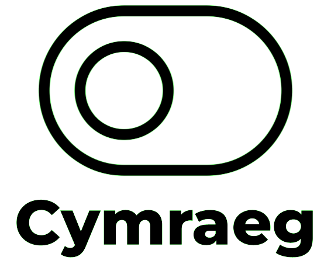
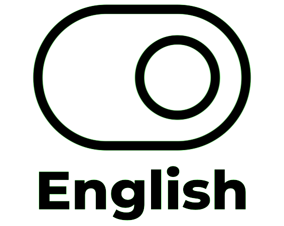

<!DOCTYPE html>
<!--[if lt IE 7]>      <html class="no-js lt-ie9 lt-ie8 lt-ie7"> <![endif]-->
<!--[if IE 7]>         <html class="no-js lt-ie9 lt-ie8"> <![endif]-->
<!--[if IE 8]>         <html class="no-js lt-ie9"> <![endif]-->
<!--[if gt IE 8]>      <html class="no-js"> <!--<![endif]-->
<html>
    <head><title>Mapio Cymru - Wicidata</title>
        <link rel="stylesheet" href="https://d19vzq90twjlae.cloudfront.net/leaflet-0.7.3/leaflet.css" />
        <script src="https://d19vzq90twjlae.cloudfront.net/leaflet-0.7.3/leaflet.js"></script>
        <script src="src/leaflet-search.js"></script>
        <script src="src/leaflet-hash.js"></script>
        <script src="src/local_scripts.js"></script>
        <script src="src/easy-button.css"></script>
        <script src="src/easy-button.js"></script>
        <script src="src/easy-button.d.ts"></script>
        <script src="src/Leaflet.Dialog.js"></script>
        <link rel="shortcut icon" type="image/x-icon" href="favicon.ico">
        <link rel="stylesheet" href="src/leaflet-search.css" />
        <link rel="stylesheet" href="font-awesome-4.7.0/css/font-awesome.min.css">
        <link rel="stylesheet" href="src/Leaflet.Dialog.css">
        <style>
          #map{ position:absolute;top:0;left:0;bottom:0;right:0; }
          .wikidata {
      white-space: nowrap;
      width: auto;
      height: auto;
      background: orange;
      border: 1px solid black;
    }

    .wikidata.q {
      background: black;
      color: orange;
    }

    .description{
        background: white;
        width: 100px;
    }
        </style>
      </head>
    <body>
        <div id="map"></div>

        <script>
      
        // initialize the map
        var map = L.map('map').setView([52.2110,-3.8123], 12)
        
        
        
        // load the OSM.ORG tile layer
               var basemap_1 = L.tileLayer('https://{s}.tile.openstreetmap.org/{z}/{x}/{y}.png',
          {
            attribution: 'Tiles by <a href="https://openstreetmap.cymru">(c) OSM Contributors</a>, Data by <a href="https://wikidata.org">Wikidata</a>',
            maxZoom: 18,
            minZoom: 9
          })
          basemap_1.addTo(map);
        
        // load the OSM.CY tile layer

        var basemap_0 = L.tileLayer('https://openstreetmap.cymru/osm_tiles/{z}/{x}/{y}.png',
          {
            attribution: 'Tiles by <a href="https://mapio.cymru">(c) OSM Contributors</a>, Data by <a href="https://wikidata.org">Wikidata</a>',
            maxZoom: 18,
            minZoom: 9
          })
          basemap_0.addTo(map);


          
// Declare variables
var sparql_2; // Holds the relevant query
var bounds; // Holds the map extent


// Holds the markers

var visual_collections_mk = L.icon({
    iconUrl: 'images/Down_triangle_pin.png',
    iconSize: [75, 75],
    iconAnchor: [22, 74],
    popupAnchor: [15, -75],
    //shadowUrl: 'my-icon-shadow.png',
    //shadowSize: [68, 95],
    //shadowAnchor: [22, 94]
});

var place_of_education_mk = L.icon({
    iconUrl: 'images/Square_pin.png',
    iconSize: [75, 75],
    iconAnchor: [22, 74],
    popupAnchor: [15, -75],
    //shadowUrl: 'my-icon-shadow.png',
    //shadowSize: [68, 95],
    //shadowAnchor: [22, 94]
});

var place_of_birth_mk = L.icon({
    iconUrl: 'images/Up_triangle_pin.png',
    iconSize: [75, 75],
    iconAnchor: [22, 74],
    popupAnchor: [15, -75],
    //shadowUrl: 'my-icon-shadow.png',
    //shadowSize: [68, 95],
    //shadowAnchor: [22, 94]
});

var place_of_death_mk = L.icon({
    iconUrl: 'images/Circle_pin.png',
    iconSize: [75, 75],
    iconAnchor: [22, 74],
    popupAnchor: [15, -75],
    //shadowUrl: 'my-icon-shadow.png',
    //shadowSize: [68, 95],
    //shadowAnchor: [22, 94]
});


// CREATE THE OVERLAY LAYERS

var visual_collections = L.layerGroup() // it's a schools overlay
var place_of_birth = L.layerGroup() // it's a transport overlay
var place_of_death = L.layerGroup() // it's a Medical overlay
var place_of_education = L.layerGroup() // it's a toliets overlay
var GLAM = L.layerGroup() // it's a GLAM overlay

// These set default values for some variables
var lang_select = "cy,en" //This means Cymraeg for preference. It can be switched to en for English
var linktext1OSM = "\">Gweld ar OpenStreetMap</a><br /><a href=\"" //This is text that can create hotlinks
var linktext2OSM = "\"> Gweld ar Wikidata </a></span>" //This is text that can create hotlinks
var occupation_select = "Galwedigaeth: "
var occupation_lang = "cy"
var view_at_nlw = "Gweld y cofnod"
let legend_state = 0
var error_popup = "<h1>Gormod o ganlyniadau chwilio</h1> <p>Ni fydd pob nodwedd yn cael ei dangos. Chwyddo'n agosach a chwilio eto</p>"

var legend = L.control({ position: "bottomleft" });

let max_markers = 200


// ADD a language button
// The button toggles between two states for language selection
var stateChangingButton = L.easyButton({
    states: [{
        stateName: 'English',
            icon:      '',    
            title:     'Switch to English',
            onClick: function(btn, map) {
             //   map.setView([42.3748204,-71.1161913],16);
                btn.state('Cymraeg');
                lang_select = "en";
                occupation_lang = "en";
                occupation_select = "Occupation: ";
                view_at_nlw = "View the record"
                linktext2OSM = "\"> Edit on Wikidata </a></span>";
                search_control.removeFrom(map);
                    search_control = new L.Control.Search({
		            url: `https://nominatim.openstreetmap.org/search?format=json&q={s}&accept-language=en,cy`,
		            jsonpParam: 'json_callback',
		            propertyName: 'display_name',
		            propertyLoc: ['lat','lon'],
		            marker: L.circleMarker([0,0],{radius:30}),
		            autoCollapse: true,
		            autoType: false,
		            zoom: 14,	
                    textPlaceholder: "Search",
                    minLength: 2
	                });
                search_control.addTo(map)
                
            }
        }, {
            stateName: 'Cymraeg',        // name the state
            icon:      '',               // and define its properties
            title:     'Newid i\'r Gymraeg',      // like its title
            onClick: function(btn, map) {       // and its callback
               // map.setView([46.25,-121.8],10);
                btn.state('English');  
                lang_select = "cy,en";  // change state on click!
                occupation_lang = "cy";
                occupation_select = "Galwedigaeth: ";
                linktext2OSM = "\"> Gweld ar Wikidata </a></span>";
                view_at_nlw = "Gweld y cofnod";
                search_control.removeFrom(map);
                search_control = new L.Control.Search({
		            url: `https://nominatim.openstreetmap.org/search?format=json&q={s}&accept-language=cy,en`,
		            jsonpParam: 'json_callback',
		            propertyName: 'display_name',
		            propertyLoc: ['lat','lon'],
		            marker: L.circleMarker([0,0],{radius:30}),
		            autoCollapse: true,
		            autoType: false,
		            zoom: 14,	
                    textPlaceholder: "Chwilio...",
                    minLength: 2
	                });
                search_control.addTo(map)
            
            }
    }]
});
// Add the dialog box and then instantly close it
var dialog = L.control.dialog()
    .setContent("<h1>Gormod o ganlyniadau chwilio</h1> <p>Ni fydd pob nodwedd yn cael ei dangos. Chwyddo'n agosach a chwilio eto</p><h1>Too many search results</h1><p>Not all features will be shown. Please zoom in closer and search again</p>")
    .addTo(map);

dialog.close();

    stateChangingButton.addTo(map);

// ADD A CONTROL BUTTON
// This button executes the search for all layers.

L.easyButton('fa-refresh fa-3x', function(){
    if(legend_state == 1){
        dialog.close();
 
        legend_state = 0
    } else {
        //
    }

generateSparqlQuery("visual_collections"); // Get the Schools query
generateMarkers(visual_collections, visual_collections_mk); // Generate the school markers for the current map bounds
generateSparqlQuery("place_of_birth");
generateMarkers(place_of_birth, place_of_birth_mk); // Get the transport query
generateSparqlQuery("place_of_death"); // Get the toilet query
generateMarkers(place_of_death, place_of_death_mk); // Get the medical query
generateSparqlQuery("place_of_education"); // Get the toilet query
generateMarkers(place_of_education, place_of_education_mk); // Generate the school markers for the current map bounds

}
).addTo(map);

// Add the baselayers to the legend
    var baseLayers = {
    "English Map (global)": basemap_1,
    "Map Cymraeg (dim ond i Gymru)": basemap_0


};

//add the overlays to the legend
var overlays = {
   "Visual Collections": visual_collections,
  "Place of Birth": place_of_birth,
 "Place of Death": place_of_death,
 "Place of education": place_of_education
  /* "Diwylliant": GLAM,
   "Safleoedd Hanesyddol": historic,
   "Safleoedd Cynhanesyddol": prehistoric,
   "Bryniau a Mynyddoedd": hills,
   "Traethau": beaches,
   //"Parciau Gwledig": country_parks,
   "Llynnoedd a Chronfeydd Dŵr": lakes,
   "Enwau Lleoedd Safonol Cymru": officialnames
*/
};

// Make the mao
var hash = new L.Hash(map);

L.control.layers(baseLayers, overlays, {collapsed:false}).addTo(map);

var search_control = new L.Control.Search({
		url: `https://nominatim.openstreetmap.org/search?format=json&q={s}&accept-language=$cy,en`,
		jsonpParam: 'json_callback',
		propertyName: 'display_name',
		propertyLoc: ['lat','lon'],
		marker: L.circleMarker([0,0],{radius:30}),
		autoCollapse: true,
		autoType: false,
		zoom: 14,	
    textPlaceholder: "Chwilio...",
    minLength: 2
    
	})
    
    search_control.addTo(map)


        </script>
        
    </body>
</html>
